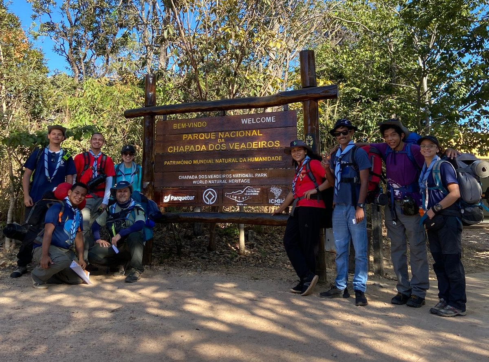
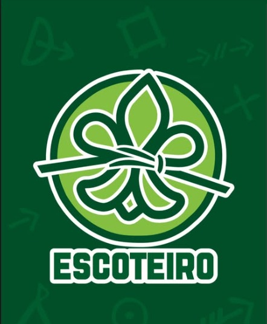

Acampamentos
Vivência intensa na natureza, aprendendo autonomia, culinária mateira e trabalho em equipe sob as estrelas.
No GEAR 9º DF, cada atividade é pensada para desenvolver caráter, liderança e espírito de equipe.
Vivência intensa na natureza, aprendendo autonomia, culinária mateira e trabalho em equipe sob as estrelas.

Exploração de novos caminhos, desenvolvendo orientação, resistência física e respeito pelo meio ambiente.

Momentos de integração, canções tradicionais e reflexões que fortalecem nossos valores e amizades.

Desenvolvimento de habilidades em primeiros socorros, técnicas escoteiras, meio ambiente e outras áreas.

Atividades práticas que ensinam responsabilidade, tomada de decisão e coordenação de equipe.

Progressão pessoal por meio de desafios que estimulam o crescimento individual e coletivo.
Venha conhecer o GEAR 9º DF e participar de uma atividade com a gente.